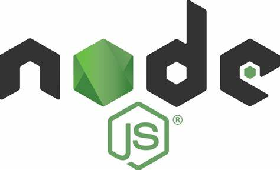

Node.js é um software de código aberto, multiplataforma, baseado no interpretador V8 do Google e que permite a execução de códigos JavaScript fora de um navegador web. A principal característica do Node.js é sua arquitetura assíncrona e orientada por eventos. O runtime do Node.js é single-thread — uma única thread (chamada de Event Loop) é responsável por executar o código Javascript, sem a necessidade de criar novas threads, o que torna o código mais simples de manter. Chamadas que seriam bloqueantes, como entrada/saída, são realizadas de forma assíncrona usando a libuv.
